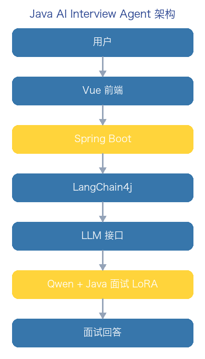
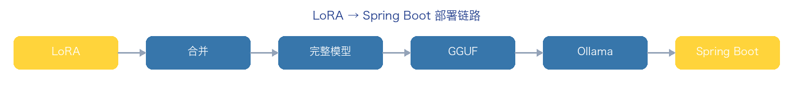

大模型微调实战 Day3：把 LoRA 模型接入 Ollama / Spring Boot / LangChain4j
写给有 Java / 后端基础、昨天刚用 LLaMA-Factory 训出一个 LoRA 适配器、今天想让它真正被自己程序调用的开发者。 本文用「合并 → 转 GGUF → 进 Ollama → Spring Boot 调用」的顺序，一次走通从「训练产物」到「业务可调用」的最后一公里。
配图真实性说明：① 架构图 / 流程图均为本教程自制的示意框图（蓝黄主色）；② 文中代码块为真实可执行的片段，但终端与 Ollama 界面截图因依赖真实 Colab / 本地 GPU 环境，本教程以「预期输出」形式给出而非伪造截图；③ 涉及版本号、依赖坐标请以下载时官网为准。
一、今天要做出什么
昨天你只是「训练出了一个模型插件」，今天要让 Java 程序真正调用它。最终目标是做出：
Java AI Interview Agent【Java AI 面试智能体】
整体架构如下：

用户
↓
Vue 前端
↓
Spring Boot
↓
LangChain4j
↓
LLM 接口
↓
Qwen + Java Interview LoRA
↓
面试回答二、先搞懂：LoRA 不能直接给 Ollama
这是很多新手第一个坑。你昨天训练出来的产物叫：
java-interview-lora它不是完整模型，它只是：
Adapter【适配器】用个类比：你买了一台手机，Qwen 模型是手机本体，LoRA 是一个专业插件。两者组合，才变成「Java 面试专家模型」。
Qwen
+
Java Interview LoRA
=
Java 面试专家模型所以正确的流程是：
LoRA
↓
合并（merge）
↓
完整模型
↓
Ollama 加载LoRA 只保存了「相对原模型的增量权重」。没有基座模型，它自己什么都干不了。任何「直接把 LoRA 丢给 Ollama」的尝试都会失败。
三、Day3 整体路线
今天要按顺序走完六步：
Step1 Colab 合并 LoRA
Step2 导出 HuggingFace 模型
Step3 转换 GGUF
Step4 导入 Ollama
Step5 Spring Boot 调用
Step6 LangChain4j 接入完整链路如下图：

四、Step1：合并 LoRA（Colab）
回到昨天训练用的 Colab。假设你的训练输出在：
output/java-interview-lora现在需要把 Qwen2.5-3B 基座和这个 adapter 合并成完整模型。
先安装依赖：
!pip install peft transformers accelerate创建 merge_lora.py：
from transformers import AutoModelForCausalLM, AutoTokenizer
from peft import PeftModel
base_model = "Qwen/Qwen2.5-3B-Instruct"
adapter_path = "./output/java-interview-lora"
# 加载基础模型
model = AutoModelForCausalLM.from_pretrained(
base_model,
device_map="auto",
)
# 加载 LoRA
model = PeftModel.from_pretrained(model, adapter_path)
# 合并（把增量权重写回基座权重）
model = model.merge_and_unload()
# 保存
model.save_pretrained("./java-interview-qwen")
tokenizer = AutoTokenizer.from_pretrained(base_model)
tokenizer.save_pretrained("./java-interview-qwen")
print("merge success")运行：
python merge_lora.py预期得到目录 java-interview-qwen，这就是合并后的完整模型。
五、Step2：先测试合并后的模型
别急着上 Ollama，先用 Python 验证合并没出错：
from transformers import pipeline
pipe = pipeline(
"text-generation",
model="./java-interview-qwen",
)
result = pipe(
"HashMap 为什么线程不安全？",
max_new_tokens=300,
)
print(result)观察输出里有没有你的「面试风格」（比如它会按 核心原理 / 源码分析 / 项目实践 / 面试话术 来组织回答）。如果还是通用口吻，说明 LoRA 没合并进去，回去检查 adapter 路径。
六、Step3：转成 Ollama 支持的 GGUF
Ollama 推荐用 GGUF 格式。原因很直接：
原模型：float16，几十 GB → 个人电脑跑不动
GGUF ：量化后，几 GB → 本地 Mac 就能跑安装 llama.cpp（Mac 用 brew，其他平台用源码）：
brew install llama.cpp
# 或源码方式：
git clone https://github.com/ggerganov/llama.cpp转换：
python convert_hf_to_gguf.py \
java-interview-qwen \
--outfile java-interview.gguf预期得到 java-interview.gguf。
GGUF 的量化等级（q4_K_M / q8_0 等）会直接影响回答质量。量化越狠文件越小，但 LoRA 学到的「面试话术」细节越容易丢。先用 q8_0 保质量，体积能接受再降档。
七、Step4：导入 Ollama
你的 Mac 应该已经装了 Ollama。先创建一个 Modelfile：
FROM ./java-interview.gguf
PARAMETER temperature 0.7
SYSTEM """
你是一名 Java 高级工程师面试官。
回答需要按照：
1. 核心原理
2. 源码分析
3. 项目实践
4. 面试话术
输出。
"""创建模型：
ollama create java-interviewer \
-f Modelfile查看：
ollama list预期列表里出现 java-interviewer。
八、Step5：测试 Ollama
ollama run java-interviewer输入：
ConcurrentHashMap 为什么线程安全？预期类似：
JDK8 取消了 Segment。
核心：
1. CAS
2. synchronized
3. Node
4. TreeBin
面试回答：……这一步是「模型能力验证」。Ollama 能答对，才说明前面合并 + 转换 + 导入都对了。不要跳过直接进 Spring Boot，否则查错会非常痛苦。
九、Step6：Spring Boot + LangChain4j 接入
你的主场来了——Spring Boot + LangChain4j。
Maven 加依赖：
<dependency>
<groupId>dev.langchain4j</groupId>
<artifactId>langchain4j-ollama-spring-boot-starter</artifactId>
<version>最新版本</version>
</dependency>配置 application.yml：
langchain4j:
ollama:
chat-model:
base-url: http://localhost:11434
model-name: java-interviewer
temperature: 0.7定义 AI Service 接口：
public interface InterviewAssistant {
String answer(String question);
}绑定实现：
@Bean
InterviewAssistant assistant(OllamaChatModel model) {
return AiServices.create(InterviewAssistant.class, model);
}调用：
assistant.answer("HashMap 为什么线程不安全？");完整调用链路：
Spring Boot
↓
LangChain4j
↓
Ollama
↓
java-interviewer
↓
Qwen + LoRA
↓
答案十、升级成真正的 AI Agent
现在你已经有「Java Interview LLM」这个能力。下一步是把它升级成 Agent——加上 RAG：
用户问题
↓
Retriever
↓
Java 知识库
↓
Qwen LoRA
↓
回答也就是 RAG 提供企业知识 + Fine-tuning 改变模型行为。两者不是二选一，而是叠加。
十一、你的最终简历项目
这套东西可以直接包装成简历项目：
Java AI Interview Agent
技术栈：Spring Boot · LangChain4j · Qwen2.5 · QLoRA · LoRA · LLaMA-Factory · Ollama · Milvus · RAG · Agent
功能：
- 上传简历
- 自动生成面试题
- AI 模拟面试
- 评分
- 错题复习
- 个性化回答
十二、现实约束与部署建议
你现在的 Mac 是 16G ARM，能做什么、不能做什么要心里有数：
✅ Ollama 运行 3B / 7B 量化模型
✅ 开发 Spring Boot
✅ 做 RAG
❌ 不适合长期运行合并后的 16bit 模型（显存不够）所以生产建议是「分工」：
LoRA 训练 → 云 GPU
导出 GGUF → Mac Ollama 测试
服务器部署 → vLLM本地 Ollama 适合「验证 + 开发」，真正的并发服务交给云上的 vLLM（参考教程 04 的企业级部署路线）。
十三、下一步：Day4 把 RAG + LoRA 结合
因为真正的企业项目不是「训练一个模型」，而是：
RAG 提供企业知识 + Fine-tuning 改变模型行为
下一步我们要做出：
Java AI Interview Agent V1
= Qwen LoRA
+ Milvus 知识库
+ LangChain4j
+ Spring Boot这会直接贴近你现在的 Java + AI 求职方向。